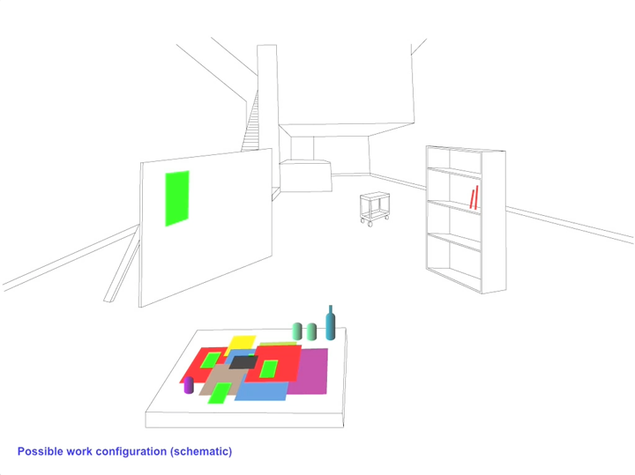

Linked By Air

AIGA 365
Medium: Print, Exhibition
Client:AIGA
Year:2007
With Lana Cavar, we designed the AIGA “365” show at the AIGA National Design Center in New York. The exhibition displays AIGA’s picks of the best graphic design of the year. We dropped the work off in the middle of the gallery, along with a pinup board, a bookcase, a couple of trolleys, a message to “move anything but with care,” and then waited to see what would happen…
AIGA provided comfortable couches and free wifi for the duration, and receptionists Mark and Lia played their iPods.